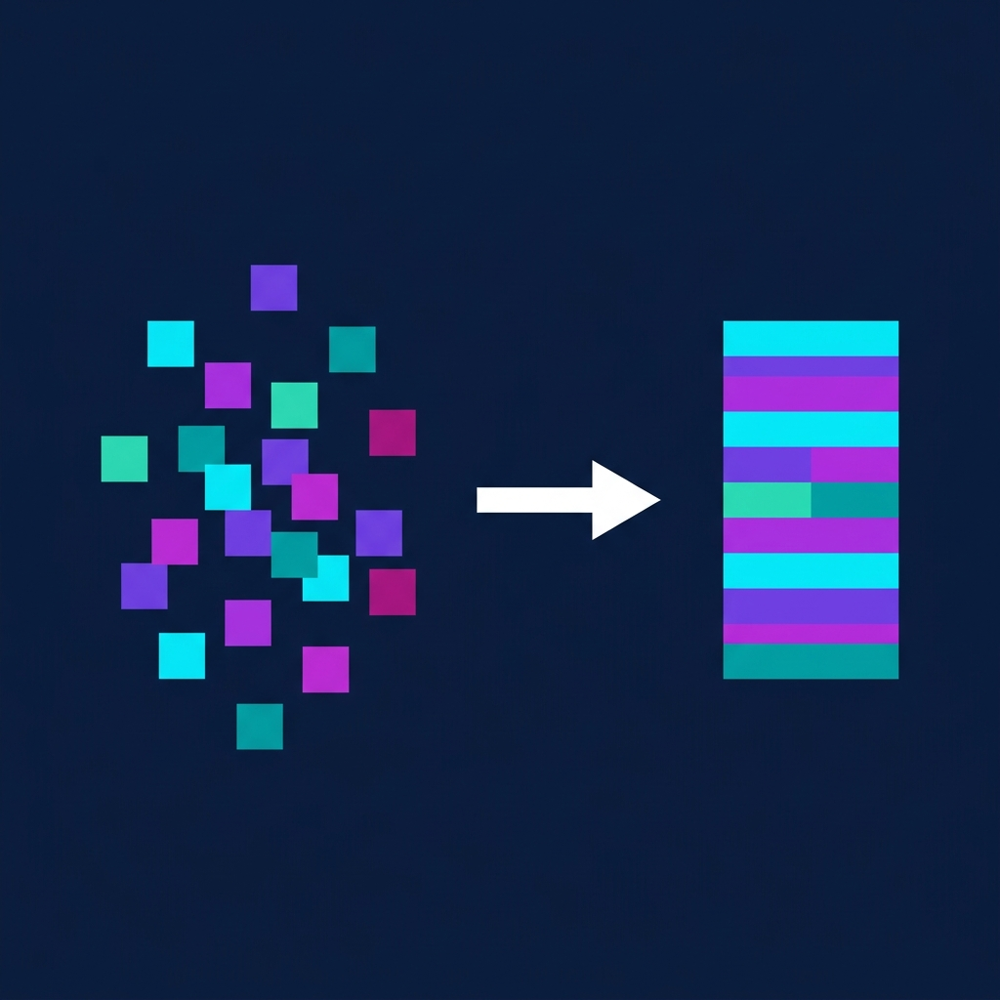

LSM-based Tuple Compaction Framework
Proposed a new mechanism to leverage Log-Structured Merge (LSM) lifecycle events to automatically infer schema and semantically compact self-describing semi-structured records. Implemented in Apache AsterixDB along with page-level compression, achieving a 9.8x reduction in storage size and query speedups of the same factor.